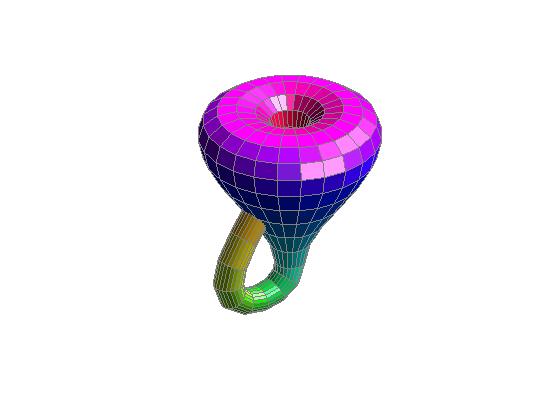

クラインの壷
クラインの壷は、4 次元空間内の方向性を持たない曲面です。2 つのメビウスの輪が共有する境界をつなげて、作成されます。
クラインの壷は、3 次元空間内では交差なしで作成できません。図は、そのような自己交差するクラインの壷の例です。
Thanks to Davide Cervone, University of Minnesota.
目次
クラインの壷の生成
クラインの壷のパラメーターの定義
n = 12; a = .2; % the diameter of the small tube c = .6; % the diameter of the bulb t1 = pi/4 : pi/n : 5*pi/4; % parameter along the tube t2 = 5*pi/4 : pi/n : 9*pi/4; % angle around the tube u = pi/2 : pi/n : 5*pi/2; [X,Z1] = meshgrid(t1,u); [Y,Z2] = meshgrid(t2,u); % The handle len = sqrt(sin(X).^2 + cos(2*X).^2); x1 = c*ones(size(X)).*(cos(X).*sin(X) ... - 0.5*ones(size(X))+a*sin(Z1).*sin(X)./len); y1 = a*c*cos(Z1).*ones(size(X)); z1 = ones(size(X)).*cos(X) + a*c*sin(Z1).*cos(2*X)./len; handleHndl=surf(x1,y1,z1,X); set(handleHndl,'EdgeColor',[.5 .5 .5]); hold on; % The bulb r = sin(Y) .* cos(Y) - (a + 1/2) * ones(size(Y)); x2 = c * sin(Z2) .* r; y2 = - c * cos(Z2) .* r; z2 = ones(size(Y)) .* cos(Y); bulbHndl=surf(x2,y2,z2,Y); set(bulbHndl,'EdgeColor',[.5 .5 .5]) colormap(hsv); axis vis3d view(-37,30); axis off light('Position',[2 -4 5]) light hold off
壷の半分
shading interp c = X; [row col] = size(c); c(1:floor(row/2),:) = NaN*ones(floor(row/2),col); set(handleHndl,'CData',c); c = Y; [row col] = size(c); c(1:floor(row/2),:) = NaN*ones(floor(row/2),col); set(bulbHndl,'CData',c); set([handleHndl bulbHndl],'FaceAlpha',1);

透明な壷
shading faceted; set(handleHndl,'CData',X); set(bulbHndl,'CData',Y); set([handleHndl bulbHndl], ... 'EdgeColor',[.5 .5 .5], ... 'FaceAlpha',.5);